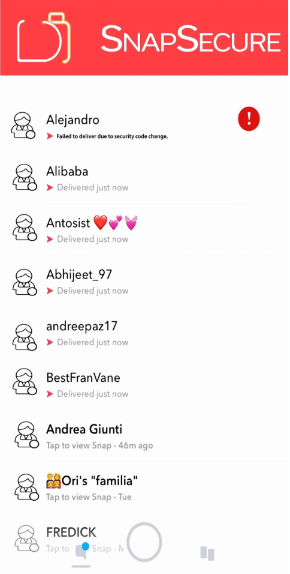
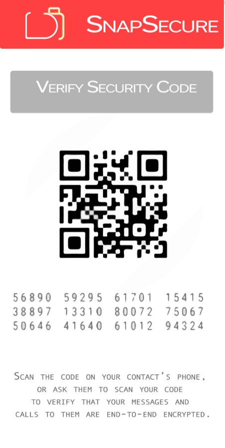

Messaging security prototype
SnapSecure
A prototype exploring clearer key-change notifications and explicit verification in encrypted messaging.

The question
How could an encrypted messaging interface make changes in a recipient’s security identity visible and understandable to the sender?
The prototype flow
Explored blocking a message when a recipient key changed, asking users to verify security codes, and providing QR-code comparisons. A re-send prompt gave the sender a deliberate choice after verification.
Scope of the work
The prototype combined familiar image and video sharing patterns with security-state transparency. This case study describes the historical interface concept and screens; it does not assert current vulnerabilities in other messaging products or a security-audited production release.
Focus areas
Project collaborators
Sharif Hadidi and Sandy Hseu
Explore the original research & project material
Historical material from the original 2017 project. Market comparisons, pricing, assumptions, and planned features reflect that period, rather than current product claims.
Prototype capabilities
Provides complete transparency around where data might possibly not be encrypted.
Asks before resending message after installation
Uses Signal protocol
Provides Snapchat features in encrypted manner:
Sharing images & videos storable for up to 24h
Fully Encrypted Live videos
4. Blocking Notification
The message is blocked if the App detects a change in the receiving user’s key. Thereafter, the users have to manually verify their security codes once more.

5. Verify Your Security Code
Construction of a QR code for quick comparisons. Asks for user approval to verify codes manually, .

6. End-to-End Encrypted Messaging
7. Re-send Notification
Once the receive user has reinstalled the app, the sending user will be asked to resend the message or send a new message.